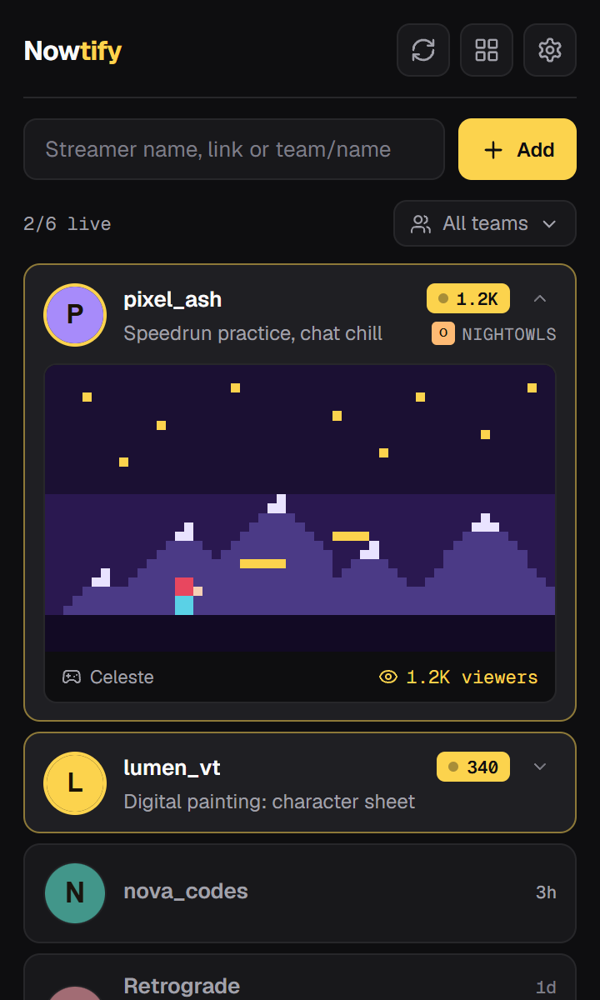
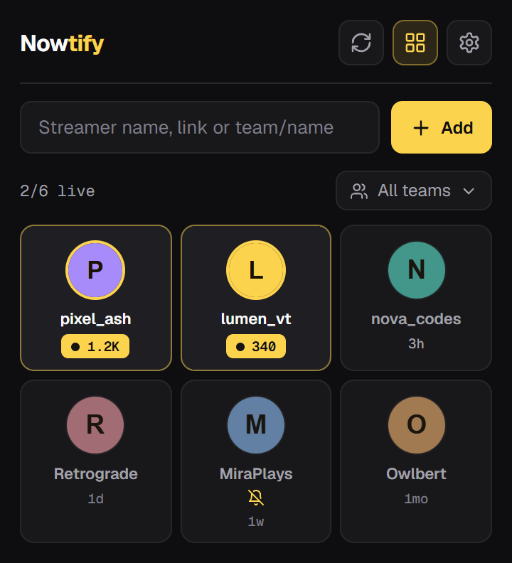
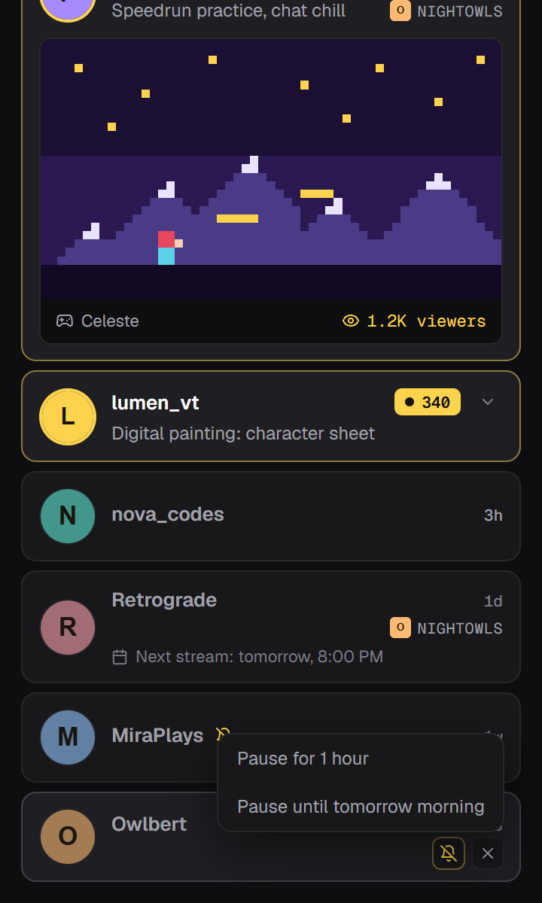
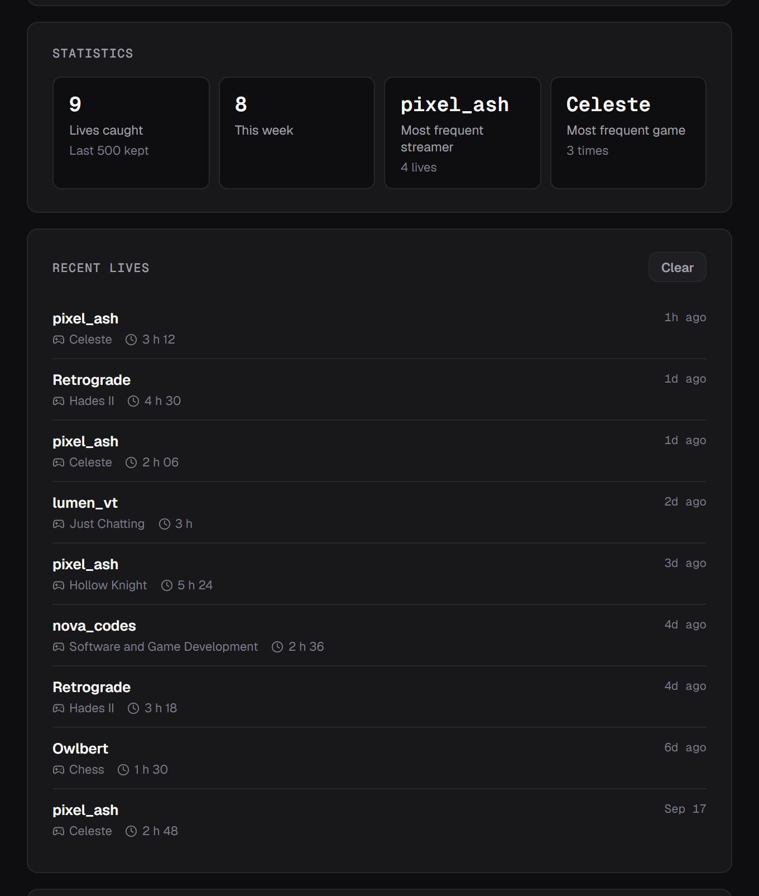

Chrome extension for Twitch
Know when they go live.
Nowtify keeps an eye on the Twitch channels you care about and sends a desktop notification when one of them starts streaming. No account to create, no server in the middle.
Also installs on Edge, Brave and Vivaldi.

01
What it does while you do something else
The popup is only the part you see. The real work happens in a background worker that talks straight to Twitch.
- Every 5 minutes
- It asks Twitch who is live among your channels, up to 100 of them per request.
- Every minute
- While someone on your list is live, checks speed up so the next one doesn't slip by.
- One click
- Clicking the notification opens the stream in a new tab.
02
The rest of the popup
Small things that make a long list easier to live with.
team/nightowls
Whole teams
Type team/ followed by a Twitch team name to add every member at once, then filter the list by team.
1 h / tomorrow
Snooze one channel
Mute a single streamer for an hour or until tomorrow morning, without removing them.
next: tomorrow, 8:00 PM
Next scheduled stream
Offline channels show their next stream when it's set in their Twitch schedule.
1.2K viewers
Live preview
Unfold a live card to see the thumbnail, the game and the viewer count.
stats
History and stats
Every live Nowtify catches is logged with its duration. The settings page sums it up: lives this week, most frequent streamer, most frequent game.
backup.json
Backup
Export your list, settings and history to a file, then import it in another browser.



03
Your data stays in your browser
Your list, history and settings are stored by Chrome on your machine. The only requests go to Twitch, to log in and to ask who is live. No analytics, no tracker, and even the fonts on this page are served from this site.
04
Questions people ask
Why does it need my Twitch account?
Twitch refuses API requests without a token, even for public data. Nowtify asks for no permission on your account: the token can only read what anyone can already see on Twitch.
How long before the notification shows up?
Nowtify checks every 5 minutes, and every minute once someone on your list is live. Expect the notification within 5 minutes of the stream starting.
Does it work when Chrome is closed?
No, Chrome has to be open. A minimized window is enough.
Firefox or Safari?
Not for now. Edge, Brave and Vivaldi can install it straight from the Chrome Web Store.
Is it really free?
Yes, and the code is on GitHub under the MIT license. If you want to chip in, there's a Ko-fi.